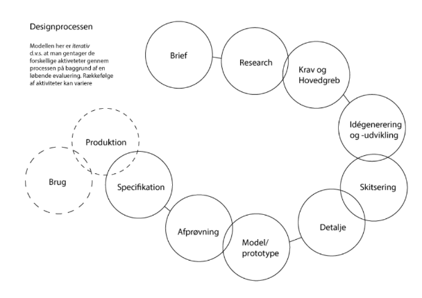
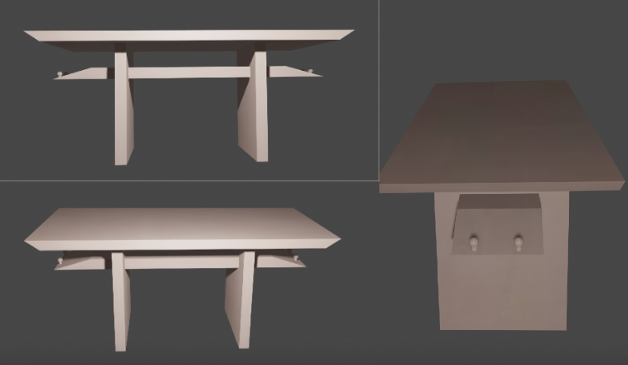

Japansk torriport bord

Begrundelse for valgte projekt
Hvalsøe Savværk forarbejder mange ædle og halvædle træsorter, firmaet fremstiller også få kvalitets plankeborde, men har nu et ønske om at udvide forretningen ved at fremstillet ét enkelt møbel mere. Dette møbel har de tænkt, skal være målrettet en ret afgrænset målgruppe. Firmaet har i den forbindelse udstedt en designkonkurrence.
Process af 3D rendering
Design process

Jeg har fulgt designprocessen således: Idegenererings faser: Her gennemgår jeg de første 4 bobler. Ideudviklings fase: Her gennemgår vi de næste 6 bobler. Denne design process er god, da den er let og forstår og se, hvornår man burde lave sine iterationer.
inspiration
Som et skrivebord ville jeg fremstille det ud fra de japanske porte. Japanske porter har stor kultur betydning for det japanske folk og derfor også havde stor betydning til vores målgruppe. Japanske porte er stramme og har et æstetisk design.
3D figur i blender

Jeg har lavet i alt 3 rengering af min første skitse af møblet i 3D. Jeg har renderet det 3 gange i 3 forskellige vinkler og 3 forskellige lys stillinger. Dette gjorde jeg for at fremvise møblet i andre positioner hvilken kan være med til at finde fejl eller finde rettelser der måske skal laves. Generelt er det godt for en sælger at fremvise produkt i flere vinkler så kunder kan se produktet i dens helhed.